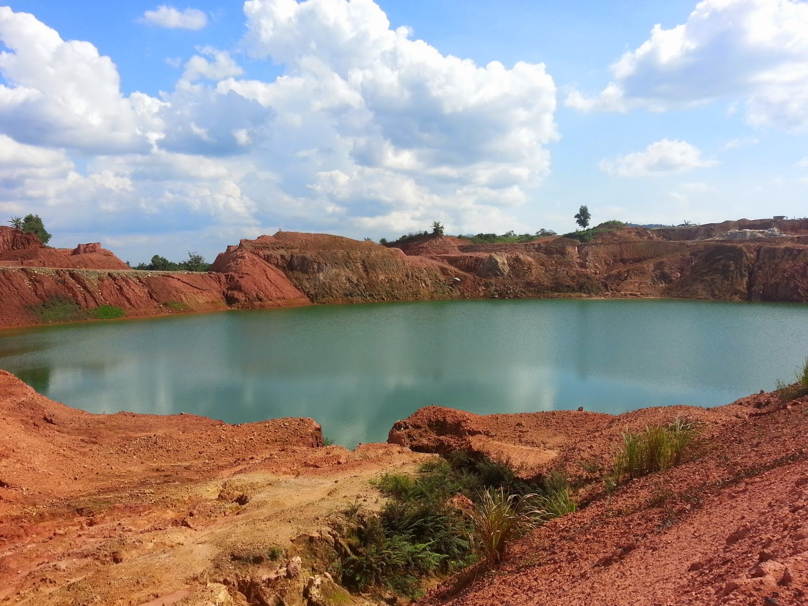
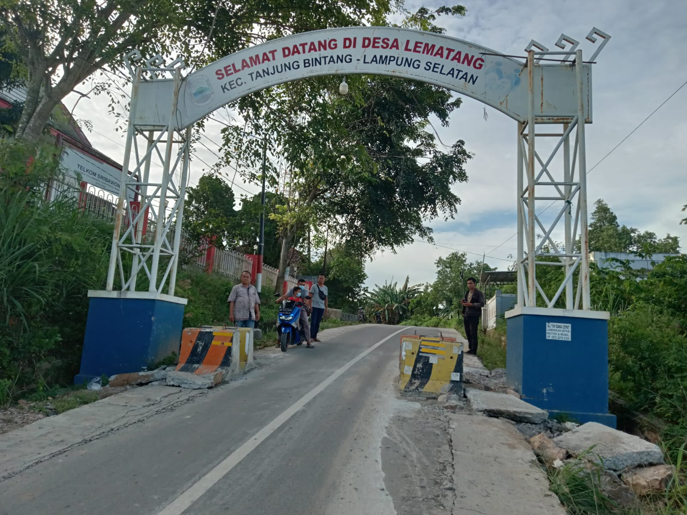

Penghargaan Desa
Prestasi membanggakan yang diraih Desa Lematang

Panen Raya Jagung Terbesar di Lampung Selatan
Penghargaan atas keberhasilan pertanian jagung dengan hasil panen terbesar se-Kabupaten Lampung Selatan tahun 2025
Galeri Kegiatan Desa
Dokumentasi kegiatan sehari-hari dan acara desa
Kegiatan Gotong Royong Desa

Pertemuan Warga

Perayaan 17 Agustus
Kegiatan PKK
Posyandu Balita
Pembangunan Infrastruktur
Kerja Bakti Mingguan
Pengajian Rutin
Kegiatan Karang Taruna
Senam Sehat Bersama
Festival Desa Tahunan
Pelatihan Keterampilan